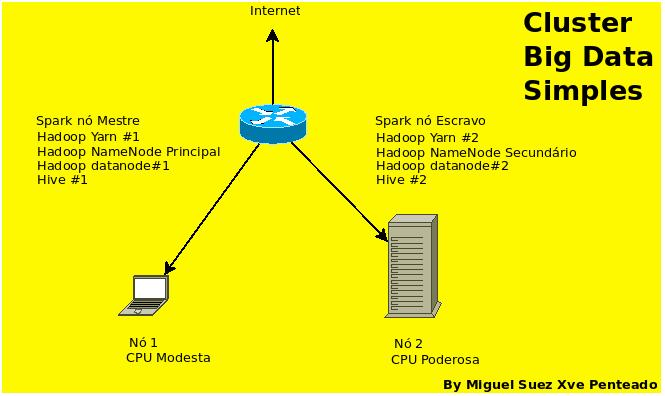

Lembretes de Big Data - Departamento de Pesquisas Avançadas - DFPA - IBGE
2020-06-07
Capítulo 1 - Apresentação
 LinkedIn
LinkedIn GitHub
GitHubO trabalho a seguir se propõe a apresentar um laboratório para processamento dos microdados do CENSO2010 do IBGE em um ambiente BIG DATA.
1.1 - Cluster para processamento e armazenamento
O cluster foi implementado em tecnologias BIG DATA padrões de mercado em 2019, a saber, apache Spark e apache Hadoop:

Cluster para processar microdados do CENSO2010
1.2 - Ferramentas clientes para acesso ao cluster BIG DATA
Utilizei ferramentas software-livre padrões para o tratamento da informação geográfico-estatística em cada etapa.
- [rstudio]
- [qgis]
- [postgres/postgis]
- [spyder3]
- [geoserver]